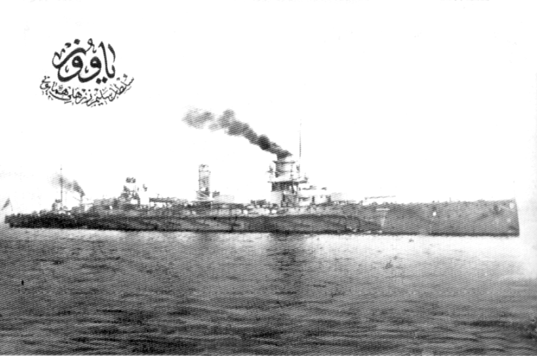

BİRİNCİ BÖLÜM
BİRİNCİ DÜNYA HARBİ: OSMANLI’NIN SON SAVAŞI
Bir savaş düşünün ki devletlerin birbirlerine olan öfkelerinin büyüklüğü kullanılan silahların şiddetinden fazla olsun. Birbirine komşu ülkeler değil ayrı kıtaların devletleri bir savaşa tutuşsun ve yaşlı dünya yaratılışından beri bu kadar şiddeti, kanı, alevi, ateşi ilk defa görüyor olsun. Birinci Cihan Harbi işte bu acı hatıralarla bilinmesi, görülmesi gereken ama en çok da savaşların acımasızlığını öğreten bir harp olarak karşımızda duruyor.
Savaşlar ve Dörtler
Bu savaşın iki tarafında dört devlet göze çarpar; İtilaf Devletleri: İngiltere, Fransa, Rusya, İtalya; İttifak Devletleri Almanya, Avusturya-Macaristan, Osmanlı ve Bulgaristan. Dünyanın dört biryanından başkaları da vardır savaşa katılan. Bu “Büyük Savaş” ile dünya aynı anda dört koca imparatorluğun çöküşüne şahit olur: Osmanlı İmparatorluğu, Alman İmparatorluğu, Avusturya- Macaristan İmparatorluğu, Rus İmparatorluğu, Şanlı Osmanlı da dâhil dört imparatorluk tarih kitaplarına kayarken dört büyük hanedanda dağılmaya yüz tutmuştur.
Osmanlı Hangi Tarafta Olmalıydı
Mağlubiyetler üstüne gelen mağlubiyetler ve gitgide bir kısır döngü hâline gelen “kaybedilen yerlerin geri alınması” düşüncesi devleti bilinmez bir sona doğru getirirken bütün umutlar Almanya’ya bağlanıyordu.

1914 Avrupa’sındaki siyasi çekişmeleri hicveden bir karikatür. Kong. Küt. Arşivi
Bugün çok rahat bir şekilde Osmanlı’nın bir kara devleti olan Almanya’nın yanında ne işi olduğu üzerine uzun uzun laflar edilmekte ve devletin bu müttefik tercihiyle büyük bir yanlış yaptığı anlatılmaktadır. O zamanki “Alman hayranı” Osmanlı devlet adamları suçlanmaktadır. Ne var ki gözden kaçırılan büyük bir gerçek mevcuttur. Savaştan evvel Avrupa’da belirlenmiş olunan ittifak safları arasında Osmanlı’nın duracağı yer asla İngiltere ve Fransa’nın yanında değildir.
Rus Çarı II. Nikola ile İngiltere Kralı VII. Edward arasında yapılan Reval Görüşmelerinde (1908) Almanya’ya karşı ittifaklar kurulup geleceğin coğrafyası şekillendirilirken Osmanlı’da dış politikada denge mimarı Sultan Abdülhamid’in tahtan indirilmesi için çalışmaktadır.
Padişah Değiştirme Zamanı mıydı
Belki Osmanlı’nın Almanya yanında yer almasından çok daha evvel dünyanın büyük bir savaşa adım adım yaklaştığı böyle kritik bir dönemde padişah değişikliği için olmadık işler çeviren İttihat ve Terakki Partisi’nin, bu partinin ordu içindeki taraftar subaylarının, yayınlarıyla kışkırtıcılık yapan bazı gazetelerin de bu işte büyük vebali vardır. Her ne kadar bazı tavırları tepki çekse de siyaset dehası, otuz seneden fazla padişahlık yapmış bir sultanın indirilip yerine yaşlı ama tecrübesiz bir
şehzadenin devletin en kritik anında tahta çıkartılmış olması sorgulanmalıdır. Osmanlı tarihinde belki de hiç istemeden tahta çıkan1 Sultan Mehmed Reşad, 65 yaşın yorgunluğu devlet işlerindeki tecrübesizliği ile ciddi bir otorite boşluğu doğmasına yol açmıştır ki Osmanlı’nın bu en ihtiyar padişahının aslında bu işte mesuliyeti çok azdır.
Bir Heyecanlı Genç Enver Paşa
I. Balkan Harbi sonunda kaybedilen Edirne’nin II. Balkan Harbi esnasında geri alınması (21 Temmuz 1913) Enver Paşa’nın yıldızının parlamasına büyük tesir yaptı. Bir grup genç subayın Harbiye nâzırı olarak Enver Bey’i görmek istemeleri ve bunun için çeşitli gizli çalışmalar içinde olmalarını öğrenen Harbiye Nâzırı Ahmed İzzet Paşa istifa etti. Yarbay Enver Bey sürpriz bir şekilde Harbiye nazırlığına getirildi Cemal Bey’in bahriye nâzırı; Talat Bey’in dâhiliye nâzırı olmasıyla birlikte Osmanlı gemisi yeni bir rotaya doğru dönmeye başladı.
Enver-Talat ve Cemal üçlüsü hükümetin adeta sahibi hâline gelmişti. Said Halim Paşa’nın hiçbir iktidar gücü kalmamıştı. Sultan Mehmed Reşad da muhatap olarak Enver-Talat- Cemal üçlüsünü alıyordu.
Bu heyecanlı üçlü sultanın yaptığı tayinleri reddedecek kadar mühim bir konuma gelmişti.
Balkanların Ağır Faturası
I. Balkan Harbi’nin Osmanlı’daki adı “Balkan Faciası”dır. Bu mağlubiyet sonucunda; yaşanan büyük yıkım da bugünkü ülkemiz topraklarının 1/5’inden fazla toprak kaybedilmiştir. Orhan Gazi zamanında Süleyman Çelebi’nin sonraları Şehit Sultan Murad’ın, Yıldırım’ın kazandığı topraklar dahi kaybedilmiştir. Üç haftaya sığan faciada;
kaybedilen toprak:167.000km2,
kaybedilen vilayet: 33,
kaybedilen ilçe: 158,
kaybedilen nüfus: 6.500.000’dür.2
Meriç Nehri’ne kadar Avrupa’daki topraklar ve Balkan ordusu kaybedilmiştir. Sonrasında bir göç dramı yaşanmış, gıcırdıyarak dönen kağnı sesleri aslında dev bir devletin yıkılışının iniltileri olmuştur. İttihatçılar için Balkan kayıplarını ne yapıp edip bir an önce gidermek gereklidir.
Alman İttifakı Günü Meclis Kapandı
Enver- Cemal ve Talat üçlüsünün Almanya ile gizli ittifak yaptıkları gün (2 Ağustos 1914) meclis beş ay sürecek bir tatile girdi. Osmanlı Mebusan Meclisi’nin tatilde olduğu bir esnada Osmanlı, I. Dünya Savaşı’na girdirildi. (11 Kasım 1914)
Cihad İlanı
Sultan Reşad, bir oldubitti ile girilen hazin macera karşısında çaresizdi ve aynı gün bir beyanname neşrederek İtilâf Devletlerine (İngiltere, Rusya ve Fransa) karşı büyük cihadı ilan etti. Bu davet bütün Müslümanları ordunun yanında savaşa iştirak etmeye çağırıyordu.
Cihadın Adı
Sultan II. Abdülhamid’in kızı Ayşe Sultan; hatıratında babasının, Sultan Mehmed Reşad’ın cihad ilanının tesirli olamayacağını şu sözlerle ifade ettiğini belirtir: “Cihad ilân olununca babam büsbütün şaşırmış ve ‘Cihadın kendisi değil, fakat ismi bizim elimizde bir silâhtı. Ben bazen sefirleri tehdit etmek istediğim vakit bir İslâm halifesinin iki dudağı arasında bir kelime vardır. Allah bunu çıkartmasın, derdim. Cihad bizim için ismi olup da cismi olmayan bir kuvvetti. Bunun altından nasıl çıkacaklar, İngiltere buna aldanacak mı?’ diyerek teessürlerini bildirmiş.”3
Savaşa Neden Girildiğini Sorgulamayan Meclis
14 Ocak 1915’te meclis açıldığında Sultan Reşad savaşa girilişi mecburiyet olarak anlatıyordu. Padişah, İttihatçılar gibi görüş beyan ediyordu. Tarafsızlığını ilan etmiş bir devletin Karadeniz’de Rus donanmasına neden ateş açtığına cevap olarak Osmanlı donanmasının saldırıya uğraması gösteriliyordu. Meclis ise takip edilen siyasetin memleket menfaatine olduğunu düşündüğünü beyan ederek hükümet ve orduya teşekkür ediyordu. Meclis-i Mebusan’ın aldığı tutum, bir manada savaşa girilmesinin tasdik edildiğini gösteriyordu ki Meclis’in açık kaldığı dönemde Osmanlı Devleti’nin neden Cihan Harbi’ne girdiği mevzu bahis bile olmadı.
Bu Gidiş Nereye
Trablusgarp ve Balkan Savaşları ile girilen çıkmaz sokağın sonunun bir dünya savaşına dayandığının farkına varamayan idare, devleti felaketlere götürürken maalesef karşısındaki duvara çizilen merdiveni gerçek sanmaktaydı.
Devrin süper gücü İngiltere ise artık Osmanlı İmparatorluğu’nu yaşatmanın hem müşkül hem de lüzumsuz olduğunun farkındaydı. Bir “Hasta Adamı” yaşatmaya çabalamaktansa oturup mirasını paylaşmak sömürgeci bir devlet için kararını zor vereceği bir tercih olmayacaktı.
İngiltere, Almanya’ya karşı Rusya’nın kendi safında olmasını sağlamalıydı ki bunun için de Boğazların vaat edilmesi Rusya’yı ikna etmeye yetecekti. İngiliz kamuoyu dünyanın Alman işgalinde olmaması için savaşan İngiltere’nin arkasındaydı. Devrin gazetelerinde İngiliz kadınların fişek doldurarak ordusuna destek olduğuna dair hamasi haberler yayınlanıyordu.4 Bir korku her yerde hissettiriliyor ve tek kurtuluş çaresi olarak İngiltere gösteriliyordu.
Osmanlı hangi safın üstün olduğunun elbette idrakindeydi. Hatta İngiltere ve Fransa’ya iki defa ittifak teklifinde bulunmuş kadim düşman Rusya’ya dahi müttefik olma teklifinden bahis açmışsa da hep reddedilmiştir. Yalnızlıktan kurtulmak için çırpınan bir devlete Almanya’nın yakınlaşması çok uzun sürmeyecektir.
Sonu Gelmez Hayaller
Almanların son yüzyılda gösterdiği göz alıcı gelişme, iki asırdan fazla kapanmaz yaralarından kan kaybeden insan misali sürekli toprak yitiren Osmanlı için “Kötü gidişata dur deme” fırsatı olarak görüldü. Boğazlar devletin kontrolünde olacak, Ermeni arzuları son bulacak, Arap Yarımadası ve Süveyş Kanalı’nda sadece Osmanlı söz sahibi olacaktı. Bir zamanlar olduğu gibi yine İslam dünyasında liderlik sürecek, Batı’da kaybedilen topraklar Doğu’da kazanılacak ve belki de Güney ve Kuzey Azerbaycan ve Türkistan’la kucaklaşılacaktı.
Osmanlı kendi hayallerinde yaşayadursun Alman İmparatorluğu’nun derdi halifeliğin gücü ile İngiliz sömürgelerini ayaklandırmak, Süveyş Kanalı’nı kapatmaktı. Almanya için Osmanlı, sahip olduğu stratejik konumu dolayısıyla İngiltere’ye karşı sağlam bir fren, Rusya’ya karşı ciddi bir tehditti.
Osmanlı Devleti, Almanların kazanacakları müstakbel zaferlerden yararlanmanın hesabını yapıyordu. Almanlar ise Osmanlıların Doğu’da girişeceği harekâtlarla Avrupa cephelerinde rahatlamanın… Avrupa’nın haylaz çocuğu gelecek zaferlere Osmanlıların üzerinden daha kolay ulaşacağını hesap ediyordu.
Almanlarla İttifak
Osmanlı Devleti ilk ittifak teklifini İstanbul’daki büyükelçisi aracılığı ile Almanya’ya yaptı.(22 Temmuz 1914) Aynı gün yine büyükelçi aracılığı ile Avusturya Macaristan İmparatorluğu’na teklif yenilendi. Çok gizli yürütülen bir görüşme trafiği neticesinde İstanbul’da Türk-Alman Askerî İttifakı imzalandı. (2 Ağustos 1914) Aslında, -sanılanın aksine- ittifak kurmak için çok da istekli olmayan Almanlar ikna edildi.
Almanya 1 Ağustos günü öğleden sonra düğmeye basmış ve Rusya’ya harp ilan etmişti, Osmanlı’nın bu tarihten bir gün sonra savaşa girmiş bir devletle ittifak anlaşması yapması Almanların yanında savaşa gireceğinin ispatıydı.
Eski savaşların yarasının sarılmadığı bir hengâmede savaşa girmek istemeyen devlet ilginç bir icraata imza attı ve biryandan seferberlik ilan ederken öte yandan tarafsızlığını duyurdu.
Osmanlı tarafsızlığını ilan etse de Devlet-i Aliyye’nin cepheleri genişletmesine ihtiyaç duyan Almanya, Osmanlı’nın bir an evvel harbe iştirak etmesini elzem görüyordu. Bir yanda iyiden iyiye sıkışmış bir Almanya, öte yanda büyük bir harbe girmeye hazır olmayan bir Osmanlı vardı.
Çanakkale Ruslar ve Müttefikleri
I. Dünya Savaşı’nın patlak vermesine ramak kaldığı dönemde Rusya, Boğazlar konusunda bir yandan İngiltere ve Fransa’nın nabzını yokluyor ancak müttefiklerine güvenmiyor olacak bir yandan da Boğazlar’ın verilmesi şartıyla Almanya ile anlaşma zemini arıyordu.
Bu hususta İngiltere’nin Rusya’ya Boğazlar hakkında verdiği güvence Rus menfaatlerinin muhafaza edileceği yönündeydi. Savaş öncesinde veya esnasında Boğazlar’da istediğini alan bir Rusya’nın Almanya ile anlaşması ve savaştan çekilmesi mümkün olduğu için İngiltere Boğazlar konusunda Rusya’ya kesin söz vermedi. Meselenin kesin hallinin Almanya’nın yenilgiye uğratılmasından sonra gerçekleşeceğini bildirdi.
Rusya Fransa münasebetlerinde belirleyici rol Fransızların Suriye ve Filistin üzerindeki istekleri üzerinde olmuş ve Rusya müttefikinin dileklerini kabul etmişti.
Rusya Boğazlara Niye Çağrıldı
İtilaf Devletleri için Çanakkale imtihanı çok zor geçince Rusya’dan donanması ile İstanbul Boğazı’na girmesini istedi. Gerçi Rusya, çeşitli bahaneler öne sürerek bu maceraya girmedi. Bu rağmen müttefiklerine de güvenmiyordu. Sadece menfaat birlikteliği üzerine kurulu bir ittifakta menfaat çatışmaları da kaçınılmaz olurdu. İngiltere ve Fransa Boğazlar’ı kendi hâkimiyetleri altına alabilirdi. Ruslar bu tehdit karşısında İngiltere ve Fransa’ya nota verdi. (4 Mart 1915) Notada İstanbul, İstanbul ve Çanakkale Boğazları, Marmara Bölgesinin mühim yerleri ile Marmara adaları isteniyordu.
İngiltere ve Fransa bu notadan son derece rahatsız olmalarına rağmen resmî bir tepki göstermediler. Nihayetinde Rusya’nın karşı safa geçme ihtimali her zaman mevcuttu. Müttefikler için notayı kabul etmekten başka seçenek kalmıyordu. Rusya; İngiltere ve Fransa’ya kabul ettirdiği notalarla tarihî emellerini fiiliyata geçirmek için mühim bir fırsat yakalamıştı.

Yavuz (Goben) Zırhlısı
Meşhur İki Gemi
Tam da bu vakitlerde Akdeniz’de bulunan iki Alman savaş gemisi (Goben ve Breslau) İngilizlerden kaçarak 10 Ağustos 1914’te Çanakkale Boğazı önlerine geldi ve Harbiye Nazırı Enver Paşa’nın verdiği izinle Boğaz’a giriş yaptı. Enver Paşa re’sen verdiği emirde Alman gemilerinin içeri alınmasını ve eğer takip etmek isterlerse İngiliz gemilerine ateş açılmasını istiyordu. Bu hadise Osmanlı’nın takip ettiği tarafsızlık politikasının iflasıydı. Osmanlı Devleti’ni çok zor durumda bırakan bu karardan sonra da Enver Paşa, Almanya lehine savaşa girilmesi yolundaki baskılarını sürdürdü.
Yıllar yılı Osmanlı’nın bu gemiler yüzünden savaşa girdiği anlatıldı durdu. Sanki koskoca bir devletin kaderi iki geminin elindeydi. Yıllar sonra açıklanacak belgelerde Goben ve Breslau’ın savaşa girmekte çok gönüllü olmayan Osmanlı’nın harekete geçmesi için görevlendirildikleri anlaşılacaktı.
Karadeniz Hâkimiyetini Sağlamak
Daha evvel Karadeniz’de hâkimiyetin kurulması adına Avusturya donanmasının vazifelendirilmesi hususu teklif edilmişse de Avusturya donanması için ilk iş kendi kıyılarının muhafazası olduğundan bu teklifi reddetmişti.
Gemiler uluslararası bir kriz hâline gelince Osmanlı idaresi iki gemiyi 80 milyon marka satın aldığını ve Osmanlı donanmasına dahil ettiğini bildirdi. Yavuz ve Midilli isimlerini alan gemilere Osmanlı bayrağı çekildi. Mürettebat Osmanlı bahriye askerlerinin üniformasını giydi. Bu gemilerin Alman komutanı Amiral Souchon, Osmanlı donanmasının 1. komutanlığına atandı.
Gemiler rotalarını Alman Denizcilik Bakanı Amiral Tirpitz’ten aldıkları emre göre çizmişti. Bir zamanların denizlerin en güçlü devletlerinden biri olan Osmanlı parasını verip de İngiltere’den alamadığı Sultan Osman ve Reşadiye diretnotları yerine Karadeniz güvenliği için bu gemiyi almıştı.
Alınamayan Gemi
Osmanlı’nın parasını verip de alamadığı iki gemi vardır: Sultan Osman ve Reşadiye. Bu gemilerden Sultan Osman’ı teslim almak için İngiltere’ye giden Bahriye Erkân-ı Harbiye Reisi Rauf Bey (Orbay) yaşadıklarını şöyle anlatır:
“Sultan Osman süvarisi olarak üç aydır Londra’da bulunuyordum. İlk önce Brezilya hükümeti adına Armstrong tezgâhlarında inşa edilmişken, bu hükümetle Şili ve Arjantin’in, donanma yapmamak hususunda aralarında anlaşmaları üzerine hükümetimiz tarafından satın alınarak “Sultan Osman” ismi verilen bu dretnotu teslim alıp memlekete götürecek olan bin kişilik mürettebat ve askerim de, Reşit Paşa vapuruyla İngiltere’ye gelmişti. Geminin son taksiti olan yedi yüz bin lira da ödenmişti. İşleri bir an evvel bitirmek için tecrübelerin bir “kısmından da vazgeçerek fabrika ile 2 Ağustos 1914 günü geminin, bize teslimi konusunda mutabık kalmıştık. Fakat parayı verişimizin ertesi günü için kararlaştırılan sancağımızı çekme töreni zamanından yarım saat evvel İngilizler “Sultan Osman” a el koydular.”
“…karışık durumu bahane ederek İngiltere “Sultan Osman”dan sonra, Vikers tezgâhlarında inşası tamamlanmış “Reşadiye” dretnotumuzla, gene orada Şili hükümeti namına inşa edilmişken hükümetimiz tarafından satın alınması kararlaştırılıp pazarlığı da yapılmış olan iki torpido destroyerine de el koydu.
Gerektiği şekilde, şiddetle protesto edildi ise de kâr etmedi. İngilizler yayınladıkları bir beyanname ile hangi devlete ait olursa olsun İngiliz tezgâhlarında inşa edilmekte olan harp gemilerinden hiç birinin hiç bir vesile ile İngiltere kıyılarından uzaklaştırılamayacağını tebliğ ile gemilerimize ambargo koymakta ısrar ettiler.
Biz de çaresiz, Reşit Paşa Vapuru ile İstanbul’a dönmek üzere hareket ettik.”5
Amiral Souchon, Osmanlı donanmasının Karadeniz’de tatbikat yapması lüzumunu defalarca Osmanlı idaresine bildirdi. Devletin istikbalini Almanların Avrupa’daki başarısında gören Başkomutan Vekili Enver Paşa, 26 Ekim 1914’te tatbikat müsaadesini verdi. Aralarında Yavuz ve Midilli’nin de bulunduğu on bir parçalık Osmanlı filosu, 29 Ekim sabahı Odessa, Sivastopol, Novrosiski limanlarını bombardıman etti ve birkaç Rus gemisini batırdı. Böylece Osmanlı Devleti fiilen I. Cihan Harbi’ne iştirak etmiş oldu.
Rusların Cevabı
Osmanlı Devleti’nin gelişen hadiselere Rus Donanması’nın sebep olduğunu iddia etmesinin ve karşı taraftan gelen saldırıya karşı cevap verdiklerini savunmasının bir faydası olmamış, iki gün sonra 1 Kasım’da doğu sınırlarından Osmanlı topraklarına Rus taarruzu başlamıştır.
Osmanlı’nın I. Dünya Savaşı’ndaki harekât planı, müttefiklerin Avrupa cephelerinde yükünü hafifletmek maksadıyla Karadeniz kıyılarında veya Kafkasya’da Rusya’ya; Süveyş Kanalı’ndan da İngiltere’ye taarruz etme esasına dayanıyordu. Bu sebeple I. Dünya Savaşı içinde Osmanlı’nın yer aldığı cephelerden sadece ikisinde -Kafkasya’da ve Süveyş Kanalı’nda- Osmanlı taarruzu gerçekleşmiş diğer cephelerde ordu müdafaa harbi yapmıştır.
Osmanlı Gemileriyle Savaşa Giren İngilizler
Sultan Osman ve Reşadiye gemileri parası verildiği halde alınmayınca yerlerine Alman Goben ve Breslau gemileri alınmıştır. Gemiler Osmanlı hizmetine girince Yavuz ve Midilli adını alır. Sultan Osman ve Reşadiye’nin ise bu isimlerle İngiliz donanmasında vazife alması mümkün değildir. Gemilere “Erin” ve “Agin Court” isimleri verilir ve 31 Mayıs 1916’da İskajerrak (Skagerrak - Jutland Savaşı) Deniz Muharebesi’nde kullanılırlar.6
Çanakkale Boğazı’nda İlk Çatışma
I. Dünya Savaşı içinde Çanakkale’nin ilk bombardımanı bu dönemde görülür. Alman savaş gemilerinin Çanakkale’ye sığınması üzerine İngiliz donanması Boğaz’ı ablukaya alır; bunun üzerine Osmanlı hükümeti 27 Eylül 1914’te ticaret gemilerinin de Boğaz’dan geçişini yasakladığını bildirir. İngiltere bu karara karşı tepkisini 3 Kasım’da Boğaz tahkimatını topa tutarak gösterir. 3 Kasım’da İngiliz-Fransız filosunun Boğaz’ın girişindeki tabyaları bombardımana tabi tutması I. Dünya Savaşı esnasında Çanakkale’de duyulan ilk top sesi ve ilk barut kokusudur. Osmanlı savaşa girmeden hemen önce Çanakkale bombalanmıştır. Bunun üzerine Osmanlı Devleti 11 Kasım 1914’te resmen İtilaf Devletlerine harp ilan ederek İttifak Devletlerinin safında savaşa katılır. Ve maalesef Osmanlı’nın bu büyük savaşta kesin zafer kazanacağı tek cephe de Çanakkale olacaktır.
BÜYÜK SAVAŞ’IN TÜRK CEPHELERİ
I. Dünya Savaşı’nda Osmanlı ordusu temelde altı ana cephede savaş vermiştir. Bu cepheler kısaca şöyledir:
Kafkas (Doğu) Cephesi: Karadeniz’den İran içlerine kadar uzanan Ruslarla çarpışılan cephe olup, bu cephe içinde Türk tarihinde benzeri olmayan Sarıkamış Faciası yaşanmıştır.
Irak Cephesi: Basra Körfezi’ne çıkarma yaparak Irak’ı işgale girişen İngilizlere karşı savaşılmıştır.
Filistin - Suriye Cephesi: Süveyş Kanalı’na yapılan başarısız iki taarruzun ardından başlayan İngiliz ilerleyişi karşısında Filistin’i muhafaza etmek amacıyla açılan cephedir.
Yemen ve Hicaz Cephesi: Arap Yarımadası’na hâkim olmak isteyen İngilizlere karşı Mukaddes Beldelerin (Mekke- Medine) muhafaza edilmesi için meydana gelen bir cephedir.
Galiçya, Makedonya, Romanya Cephesi: Osmanlı toprakları dışında, müttefiklere yardım maksadıyla açılmış cephelerdir. Bu üç bölgede cereyan eden savaşlara birer kolorduyla katılmışlardır. (Her bölge ayrı bir cephedir.)
Bu sayılanlar haricinde İran’da ve Libya’da da Osmanlı askerleri savaşmıştır.
1 Salih GÜLEN, Tahtın Kudretli Misafirleri Osmanlı Padişahları, s.280 İzmir 2009
2 Dr. İsmet Görgülü, Atatürk Yolu Dergisi, Çanakkale Zaferi ve Atatürk, IV/16 (1995) s.492
3 Ayşe Osmanoğlu, “Babam Sultan Abdülhamid” İst. 1994 s.231
4 The Illustrated War News 21 Haziran 1916 s.34
5 Yakın Tarihimiz 1 Mart 1962 sayısı, s. 16
6 Deniz Albay Saim Besbelli, Çanakkale’de Türk Bahriyesi 424 Sayılı Donanma Dergisi Eki Ank. 1959 s.2